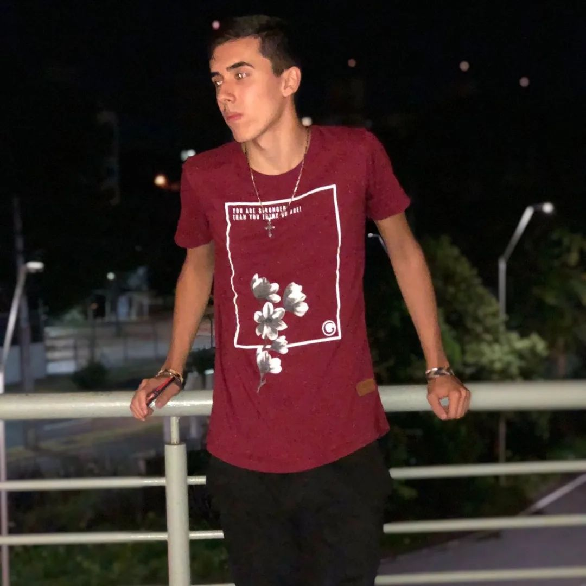

HELLO! MY NAME IS MURILO.
A programming and technology enthusiast, born and raised in this lively Brazil! Since I was 18, I've been passionate about programming. I've put together my portfolio so people can get to know me better, both in my personal and professional life. For talk with me, you can acess the flap in the final at this page! We can make a work together. Nowadays, i'm working in this project. Come check it out!
